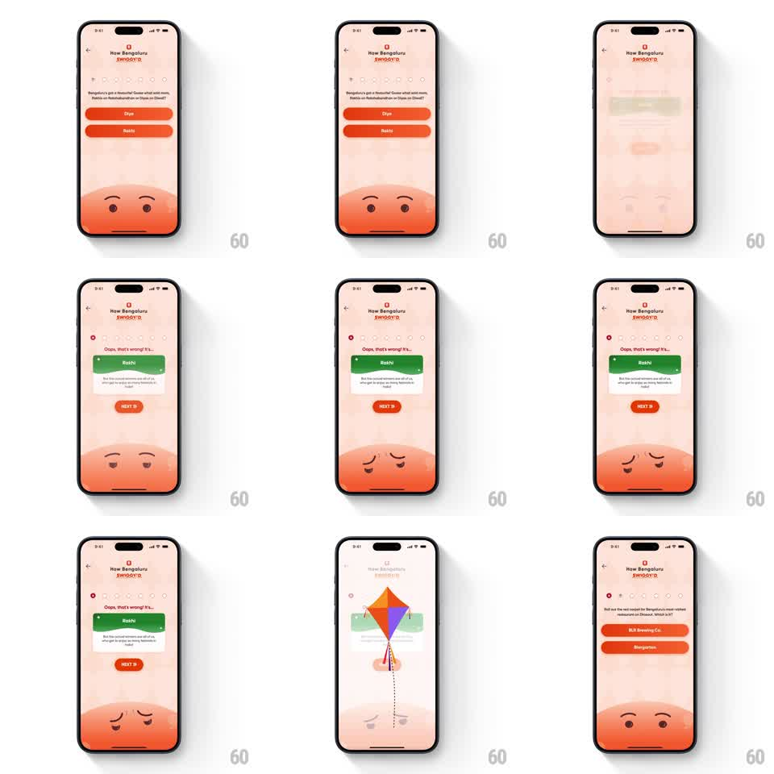

Media
Frame-by-frame

Rebuild this interaction 1:1: Swiggy's quiz wrong-answer beat - the tapped button greys out, the mascot droops, the correct answer reveals itself as a green fact card, and a kite transition carries the quiz forward.

Rebuild this interaction 1:1: Swiggy's quiz wrong-answer beat - the tapped button greys out, the mascot droops, the correct answer reveals itself as a green fact card, and a kite transition carries the quiz forward. ## Integration Integration: stack-agnostic spec - springs given as stiffness/damping, timed motions as duration + curve; map every value to your framework and animation library of choice. ## Scene A peach "How Bengaluru SWIGGY'D" quiz screen: a question with two orange answer buttons (Diya / Rakhi), progress dots, and the round orange mascot face at the bottom. On a wrong pick, the tapped button dims, "Oops, that's wrong! It's..." appears, the correct answer (Rakhi) shows as a green fact card with copy, a "NEXT >" pill appears, and the mascot's eyes droop sadly. ## Motion spec Pattern: error reveal with mascot droop, gesture-driven, ~1.5s. - On tap, the wrong button shakes briefly (2 cycles, 8px, 150ms) and fades to grey (200ms). - The "Oops, that's wrong! It's..." label fades in above the options (250ms). - The correct answer's button flips green and morphs into the fact card (350ms, ease-out), copy fading in as it grows. - The mascot's brows and eyes droop (150ms) - a sad face formed from the same simple shapes. - "NEXT >" pops in (spring stiffness 400 damping 18); on tap, a colorful kite rises through the screen (700ms, gentle sway) as the transition into the next question, which slides in behind it. ## Calibration - The shake is small and quick - a no, not an error buzz. - The mascot droop lands with the card morph, so the reaction and the reveal read together. ## Reduced motion Button dims, card fades in, no kite. ## Don't miss - The wrong progress dot fills red; correct dots stay green - the trail shows history. - The kite is the same kite from the intro collage - a recurring mascot prop, flying upward with a loose tail.